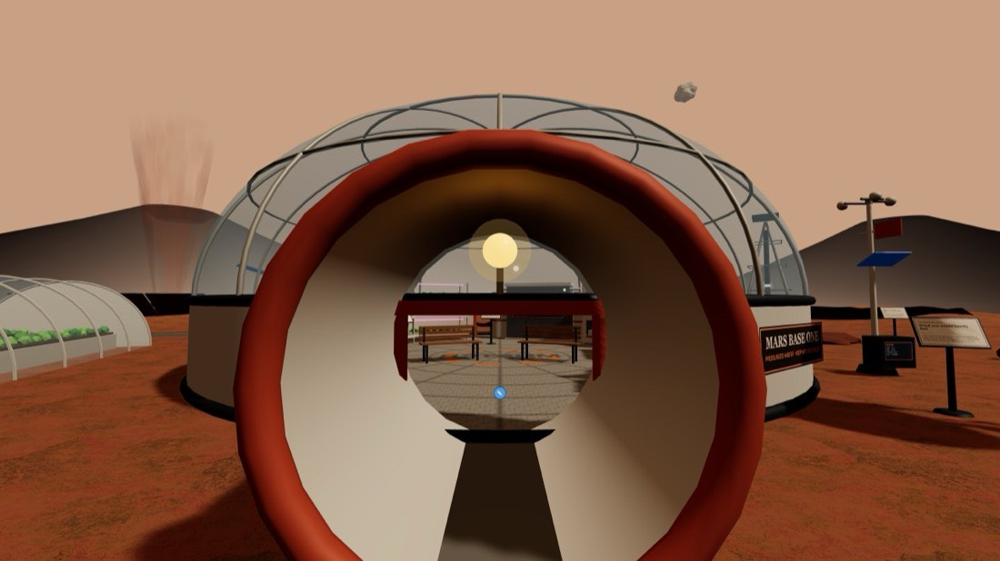
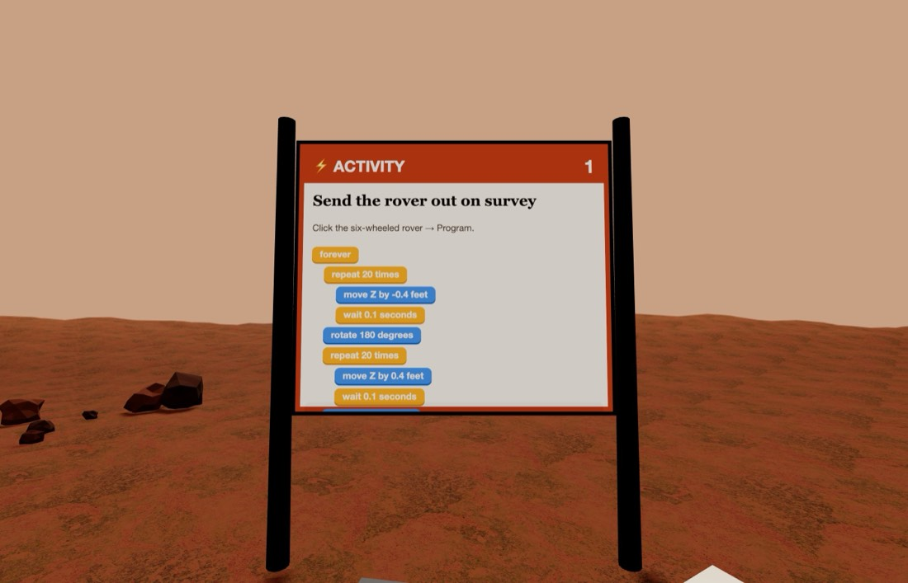
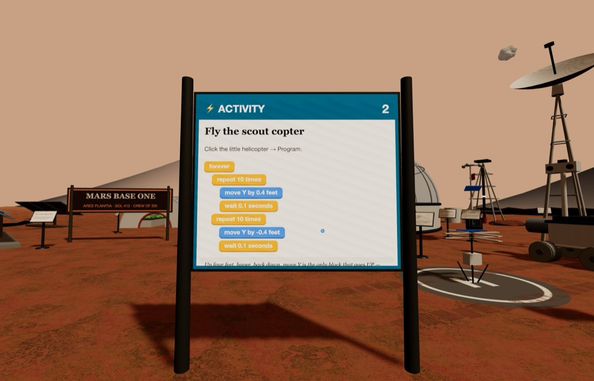

🔴 On Mars
A crewed outpost under a butterscotch sky — walk in through the airlock and look around.
Getting there: ▶ Open On Mars One click — nothing to download and no account. On Mars is no longer listed under ☰ Menu → Load World — that menu is down to four worlds — so the button above, or Get More Worlds in the same menu, is the way in. You will be set down at the front gate. Look for the bright ⚡ ACTIVITY boards — there are two of them. Type it in: edusim3dweb.com/app/?world=5 Opening a world replaces whatever is currently in your copy — save first with ☰ Menu → Load World → Save World if you have something you want to keep.



Quick starts — do these first
Both of these are printed on boards inside the world too, so you can leave this card at home. Click the object, choose Program, drag the blocks together in this order, then press Save.
Send the rover out on survey
Click the six-wheeled rover → Program
- forever
- repeat 20 times
- move forward -0.4 feet
- wait 0.1 seconds
- rotate 180 degrees
- repeat 20 times
- move forward 0.4 feet
- wait 0.1 seconds
- rotate 180 degrees
💡 Real Mars rovers crawl. Curiosity averages about 100 feet an hour, because every step has to be checked from Earth first — and Earth is up to 22 light-minutes away.
Fly the scout copter
Click the little helicopter → Program
- forever
- repeat 10 times
- move up by 0.4 feet
- wait 0.1 seconds
- repeat 10 times
- move up by -0.4 feet
- wait 0.1 seconds
💡 Up four feet, hover, back down. move up by is the only block that goes up — and on Mars getting off the ground is the hard part, because there is barely any air for the blades to push against.
Then try these three
-
Two rovers, opposite ways
Duplicate the rover, then send the original along +Z and the copy along −Z. Watch them separate. This is how a real survey covers ground twice as fast.
- duplicate 10 ft away
-
Grow-bay light show
The crops grow under magenta light because plants only use the red and blue parts of sunlight. Program an orb in the grow bay to cycle — then argue about whether it would still work.
- forever
- change color to red
- wait 1 seconds
- change color to blue
- wait 1 seconds
-
Launch the cargo lander
Everything at this base was landed years before the crew arrived. Send the lander back up — and count how many feet it climbs before you lose sight of it.
- repeat 40 times
- move up by 1 feet
- wait 0.1 seconds
Block colours
- Control — repeat, forever, wait, when an object says, duplicate
- Motion — move forward, move up, glide, rotate, go back to start
- Looks — say, change size, set size, set opacity, change colour
One rule that catches everybody: move forward and glide follow the way the object is pointing, so a rotate in front of them genuinely steers — four sides and four 90° turns bring something back exactly where it began. move up is the exception: up is up whichever way a thing is facing.